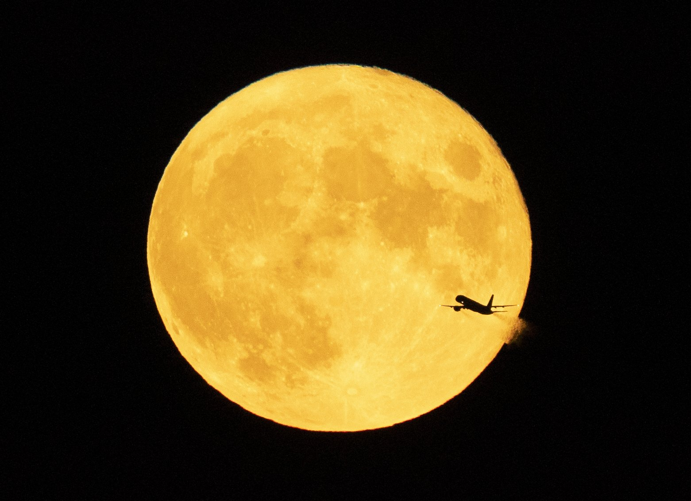

Content

(1) A seal lounges on rocks in Casco Bay, Thursday, July 30, 2020, off Portland, Maine. Seals are thriving off the northeast coast thanks to decades of protections. Many scientists believe the increased seal population is leading to more human encounters with white sharks, who prey on seals. (Robert F. Bukaty)
lounge
英[laʊndʒ]
美[laʊndʒ]
释义：
n. 休息室；酒吧；闲逛；躺椅；
v. 闲逛；懒洋洋地靠[躺]；吊儿郎当地混日子；
网络：休息厅；酒廊；沙发音乐；

(2) An aircraft passes in front of a full moon after taking off from Minneapolis-St. Paul International Airport, in Minneapolis, Monday, Aug. 3, 2020. The August full moon is known as the Sturgeon Moon. (Jeff Wheeler Star Tribune)
sturgeon
英['stɜː(r)dʒ(ə)n]
美['stɜrdʒən]
释义：
n. 鲟；
网络：鲟鱼；特金；鳇；
(3) Pacaya volcano spews lava, viewed from San Vicente Pacaya, Guatemala, Saturday, July 25, 2020. According to a bulletin published by the Guatemalan Vulcanology Institute, INSIVUMEH, the volcano has slightly increased its activity in recent days without reporting any damage. (Moises Castillo)
lava
英['lɑːvə]
美['lɑvə]
释义：
n. 岩浆；火山岩；
网络：熔岩；火山熔岩；火山岩浆；
(4) FILE - In this July 28, 1984, file photo, some 1,200 helium balloons are released into the air from the field of the Los Angeles Memorial Coliseum as part of the opening ceremony for the Summer Olympic Games in Los Angeles. (Dave Tenenbaum, FIle)
helium
英['hiːliəm]
美['hiliəm]
释义：
n. 氦；氦气；
网络：食品添加剂氦；高纯氦；氦元素；
coliseum
英[ˌkɒlɪ'sɪəm]
美[ˌkɒliˈsiːəm]
释义：
n. 体育馆；体育场；【建,旅】古罗马斗兽场；
网络：竞技场；大剧院；大剧场；
(5) This photo provided by the French Army shows oil leaking from the MV Wakashio, a bulk carrier ship that ran aground off the southeast coast of Mauritius, Tuesday Aug.11, 2020. Thousands of students, environmental activists and residents of Mauritius were working around the clock trying to reduce the damage to the Indian Ocean island from an oil spill after a tanker ran aground on a coral reef. An estimated 1 ton of oil from the Japanese ship's cargo of 4 tons has already escaped into the sea, officials said. (Gwendoline Defente, EMAE)
bulk
英[bʌlk]
美[bʌlk]
释义：
n. 大部分；主体；（大）体积；大（量）；
v. 扩展；增大；堆积起来；形成大块；
网络：散装；大批；大量；
(6) In photo provided by the Washington State Dept. of Agriculture, a worker attaches a tracking device to an Asian Giant Hornet, Thursday, Oct. 22, 2020 near Blaine, Wash. Scientists have discovered the first nest of so-called murder hornets in the United States and plan to wipe it out Saturday to protect native honeybees, officials in Washington state said Friday, Oct. 23, 2020. (Karla Salp Washington Dept. of Agriculture)
hornet
英['hɔː(r)nɪt]
美['hɔrnət]
释义：
n. 大黄蜂；马蜂；
网络：大黄蜂号；胡蜂；虎头蜂；
(7) A medical staffer watches from a tent at one of the emergency structures that were set up to ease procedures at the Brescia hospital, northern Italy, Thursday, March 12, 2020. Italians woke up to yet further virus-containment restrictions after Premier Giuseppe Conte ordered restaurants, cafes and retail shops closed after imposing a nationwide lockdown on personal movement. For most people, the new coronavirus causes only mild or moderate symptoms, such as fever and cough. For some, especially older adults and people with existing health problems, it can cause more severe illness, including pneumonia. (Luca Bruno)
containment
英[kən'teɪnmənt]
美[kən'teɪnmənt]
释义：
n. 控制；抑制；（对另一个国家力量的）遏制；
网络：包容；围堵；围堵政策；
symptom
英['sɪmptəm]
美['sɪmptəm]
释义：
n. 症状；征兆；征候；
网络：症候；病症；表征；
pneumonia
英[njuː'məʊniə]
美[nu'moʊniə]
释义：
n. 肺炎；
网络：让我得肺炎；肺炎的简介；肺炎支原体；
(8) Members of disaster relief organization Hope Bridge wearing face masks to help protect against the spread of the coronavirus crouch under desks during a "Shake Out " earthquake drill at their office in Seoul, South Korea, Thursday, Nov. 12, 2020. (Ahn Young-joon)
crouch
英[kraʊtʃ]
美[kraʊtʃ]
释义：
v. 蹲；蜷缩；低身靠向；伏；
n. 蹲；【滑雪】屈膝姿势；
网络：蹲伏；蹲下；克劳奇；
drill
英[drɪl]
美[drɪl]
释义：
v. 钻孔；训练；练习；条播；
n. 演习；电钻；练习；条播作物；
网络：操练；钻头；斜纹布；
(9) In this photo provided by Jessica Henricks, is flooding and damage from Hurricane Lane Friday, Aug. 24, 2018, near Hilo, Hawaii. Hurricane Lane barreled toward Hawaii on Friday, dumping torrential rains that inundated the Big Island's main city as people elsewhere stocked up on supplies and piled sandbags to shield oceanfront businesses against the increasingly violent surf. The city of Hilo, population 43,000, was flooded with waist-high water. (Jessica Henricks)
barrel
英['bærəl]
美['berəl]
释义：
n. 桶；枪管；一桶（的量）；
v. 飞驰；
网络：琵琶桶；圆筒；滚筒；
inundate
英['ɪnʌndeɪt]
美['ɪnən.deɪt]
释义：
v. 淹没；使不胜负荷；使应接不暇；泛滥；
网络：洪水；使充满；水淹没；
Posted on 2021-07-08 09:00:44